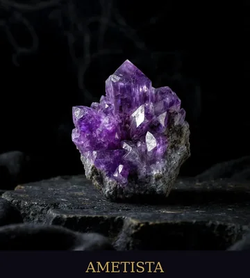
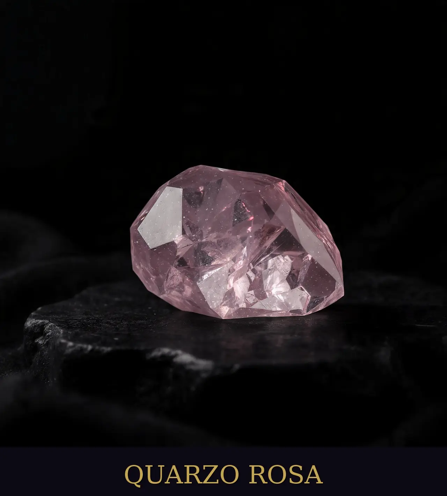
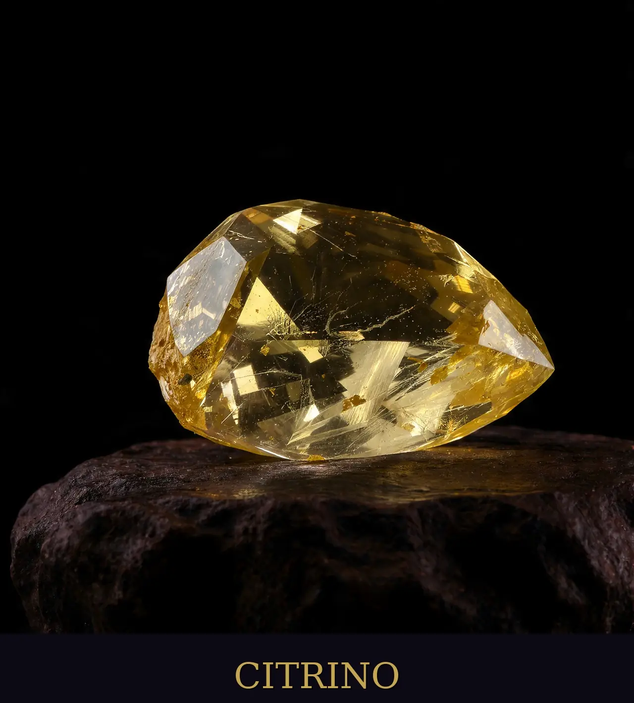
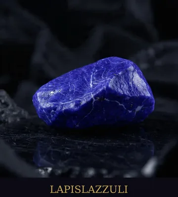
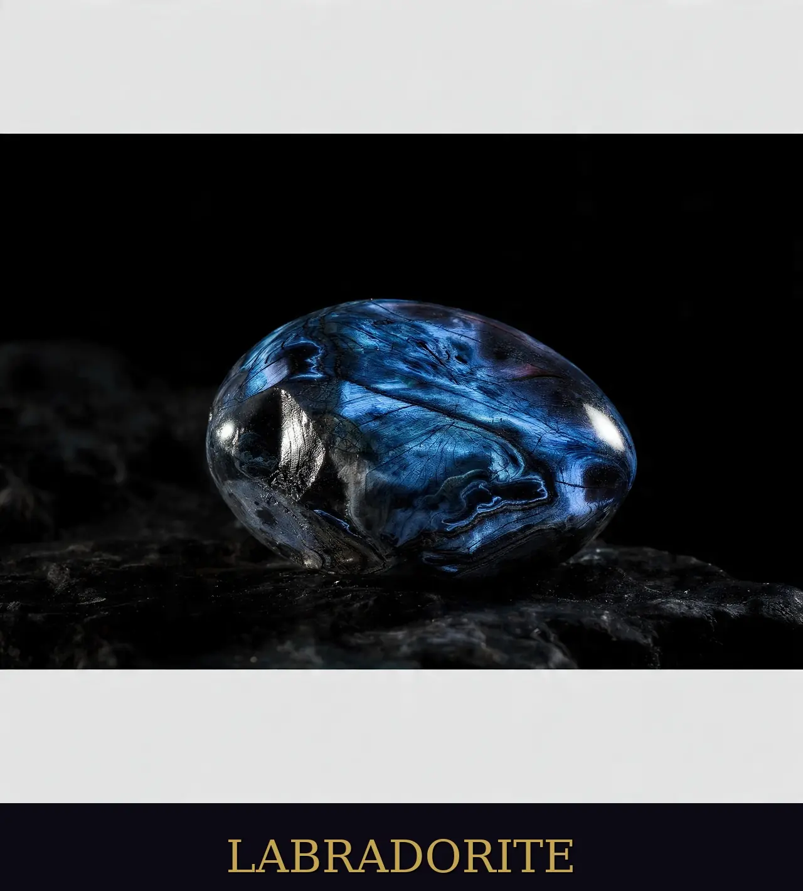
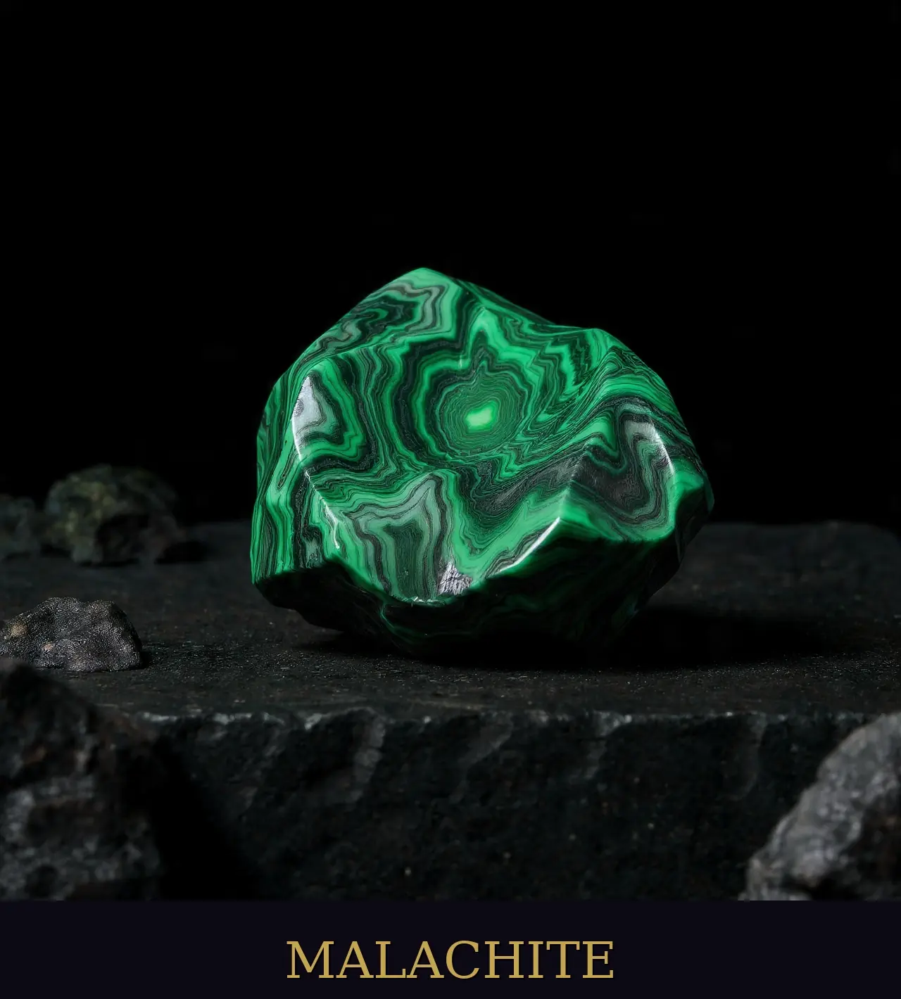
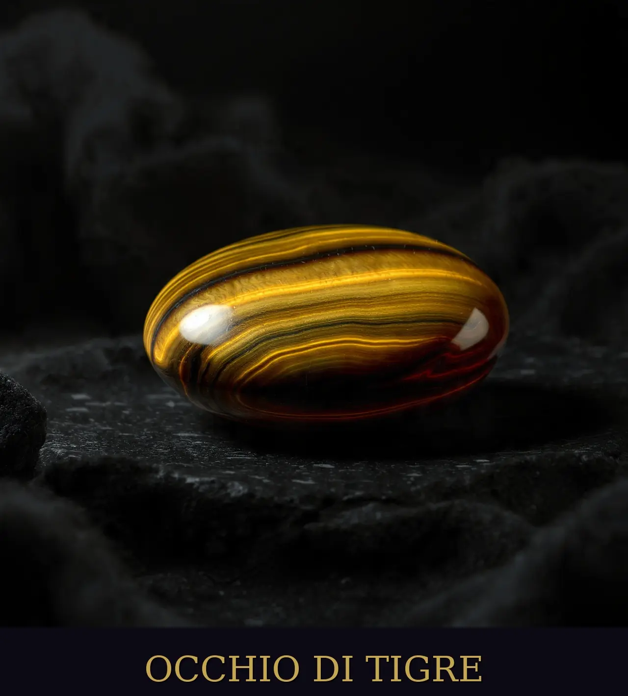

Grimorio dei Cristalli
Antichi alleati della Terra. Una guida profonda al potere esoterico, alla purificazione e al risveglio dei cristalli.

Ametista
Pietra della Trasmutazione SpiritualeL'Ametista è uno dei cristalli più venerati nella storia dell'esoterismo. Considerata un ponte tra il mondo materiale e quello divino, agisce come un potente trasmutatore di energie, elevando la frequenza vibrazionale di chi la possiede.
🔮 Significato Esoterico
- Pietra del Terzo Occhio: Lavora intensamente sul sesto e settimo chakra, aprendo la mente a visioni superiori e premonizioni.
- La Trasmutazione Violetta: Rappresenta la capacità alchemica di trasformare le ombre e le energie pesanti in pura vibrazione d'amore e luce.
- Connessione Divina: Facilita il dialogo con le proprie guide spirituali e l'Io Superiore durante la meditazione profonda.
🌙 Sogni e Intuizione
- Sogni Lucidi: Collocata sotto il cuscino, stimola l'attività onirica cosciente e aiuta a ricordare i messaggi ricevuti durante il sonno.
- Scudo Astrale: Protegge il dormiente da incubi e parassiti energetici che possono infestare lo spazio astrale notturno.
Attivazione: L'Ametista adora la Luna Piena. Lasciala esposta ai suoi raggi per una notte. Attenzione: Non esporla mai al sole diretto, poiché i raggi solari ne sbiadiscono il colore e ne indeboliscono il potere.

Quarzo Rosa
Essenza dell'Amore IncondizionatoIl Quarzo Rosa è la pietra del cuore per eccellenza. La sua vibrazione delicata ma profonda insegna la vera essenza dell'amore, partendo dalla guarigione interiore e dal perdono verso se stessi.
💖 Potere Emotivo
- Chakra del Cuore: Rimuove i blocchi emotivi e le vecchie ferite, permettendo al cuore di aprirsi nuovamente alla fiducia.
- Armonia Relazionale: Attira l'amore e rafforza i legami esistenti, portando pace e comprensione reciproca.
- Auto-accettazione: Insegna ad amarsi e a riconoscere il proprio valore divino, dissipando l'insicurezza.
Attivazione: Tienila sul cuore durante il tramonto. Visualizza una luce rosa che si espande dal cristallo verso tutto il tuo corpo. Recita: "Io merito amore, io sono circondato dall'amore".

Tormalina Nera
Lo Scudo InvalicabileIn esoterismo, la Tormalina Nera è considerata il talismano di protezione più potente. Non assorbe solo le energie negative, ma le neutralizza e le scarica a terra, proteggendo l'aura da attacchi psichici e influenze esterne.
🛡️ Difesa e Radicamento
- Protezione Psichica: Crea una barriera impenetrabile contro l'invidia, il malocchio e le proiezioni negative altrui.
- Ancoraggio alla Terra: Aiuta a rimanere focalizzati e presenti, impedendo alla mente di disperdersi in ansie e paure.
- Pulizia Ambientale: Collocata vicino ai dispositivi elettronici, neutralizza le radiazioni elettromagnetiche nocive.
Attivazione: Tienila tra le mani e visualizza radici nere che partono dai tuoi piedi e si intrecciano con il cristallo, ancorandoti saldamente al centro della Terra.

Citrino
Il Raggio di Sole AlchemicoIl Citrino è la pietra dell'abbondanza, della gioia e della volontà solare. A differenza di molti altri cristalli, il Citrino naturale non trattiene l'energia negativa, ma la trasforma e la dissipa istantaneamente.
☀️ Manifestazione e Successo
- Plesso Solare: Potenzia la volontà individuale, la creatività e la capacità di agire con fiducia nel mondo.
- Magia dell'Abbondanza: Conosciuta come la "Pietra del Mercante", attira prosperità finanziaria e successo professionale.
- Energia Vitale: Combatte la depressione e la stanchezza cronica, portando una ventata di ottimismo e calore.
Attivazione: Esponila alla luce del Sole del mattino (non quella cocente del pomeriggio). Tienila nel portafoglio o sul luogo di lavoro per attivare il flusso dell'abbondanza.

Lapislazzuli
Il Cielo Stellato della ConoscenzaIl Lapislazzuli è stato per millenni la pietra di re, sacerdoti e veggenti. È il cristallo della verità universale, capace di risvegliare le facoltà psichiche e di connettere l'individuo con la saggezza degli antichi.
📜 Verità e Visione
- Chakra della Gola: Facilita la comunicazione onesta e l'espressione della propria verità interiore senza paura.
- Chakra del Terzo Occhio: Stimola la chiaroveggenza e la comprensione dei misteri esoterici più profondi.
- Illuminazione: Aiuta a superare la depressione e a trovare il senso spirituale dietro le prove della vita.
Attivazione: Medita con la pietra appoggiata sulla fronte. Visualizza un cielo notturno pieno di stelle che si riflette dentro di te, portando risposte alle tue domande più profonde.

Labradorite
Il Tempio delle StelleLa Labradorite è la pietra dei maghi e dei ricercatori spirituali. I suoi riflessi cangianti (labradorescenza) ricordano le aurore boreali e simboleggiano la luce nascosta dietro il velo della realtà materiale.
🌌 Magia e Protezione Astrale
- Risveglio dei Poteri: Amplifica le doti psichiche innate e facilita i viaggi fuori dal corpo (proiezione astrale).
- Scudo dell'Aura: Sigilla l'aura impedendo le perdite di energia e proteggendo dai "vampiri energetici".
- Trasformazione: Supporta durante i grandi cambiamenti, infondendo forza e perseveranza.
Attivazione: Caricala sotto la luce della Luna Nuova per favorire nuovi inizi magici. Tienila vicina mentre pratichi divinazione (tarocchi o rune) per potenziare la tua visione.

Ossidiana Nera
Lo Specchio dell'AnimaL'Ossidiana è vetro vulcanico nato dal fuoco primordiale. È una pietra senza confini né limitazioni, che agisce con una velocità estrema per rivelare la verità, anche quella più scomoda nascosta nell'ombra.
🔥 Verità e Pulizia Profonda
- Specchio Interiore: Costringe a guardare i propri difetti e le proprie paure per poterli finalmente integrare e superare.
- Taglio dei Legami: Utilizzata nei rituali per recidere cordoni energetici con persone o situazioni tossiche del passato.
- Protezione Terrena: Agisce come un'ancora potente, proteggendo chi lavora con energie molto sottili o pericolose.
Attivazione: Usala con cautela. Siediti al buio con una candela accesa e osserva la superficie della pietra (scrying) per ricevere risposte dal tuo inconscio.

Malachite
Pietra della TrasformazioneLa Malachite è un potente amplificatore di energie, sia positive che negative. È una pietra "intelligente" che mette in luce ciò che ostacola la crescita spirituale, spingendo verso una trasformazione radicale.
🌿 Guarigione e Avventura
- Assorbimento del Dolore: Estrae le energie negative dal corpo fisico ed emotivo (ottima per i traumi).
- Spirito d'Avventura: Incoraggia il rischio e il cambiamento, rompendo schemi obsoleti e inibizioni.
- Sintonia con la Natura: Facilita la comunicazione con il regno vegetale e gli spiriti della foresta.
Attivazione: Appoggiala sul plesso solare per liberare le emozioni represse. Visualizza il verde intenso della pietra che rigenera ogni tua cellula.

Occhio di Tigre
Il Coraggio del GuerrieroL'Occhio di Tigre combina l'energia della Terra con quella del Sole. È la pietra della fiducia in se stessi, del coraggio e della determinazione necessaria per affrontare le sfide della vita materiale.
🐅 Forza e Prosperità
- Protezione dal Malocchio: Tradizionalmente usata per respingere maledizioni e intenzioni malevole.
- Equilibrio Mentale: Aiuta a distinguere tra ciò che desideriamo e ciò di cui abbiamo realmente bisogno.
- Fortuna Pratica: Attira ricchezza e stabilità, favorendo il successo nei progetti a lungo termine.
Attivazione: Indossala come anello o bracciale sul braccio dominante per proiettare la tua volontà e proteggere i tuoi confini personali durante il giorno.

Cristallo di Rocca
Il Maestro GuaritoreIl Quarzo Ialino o Cristallo di Rocca è il cristallo più versatile e potente del regno minerale. Agisce come un amplificatore universale, potenziando l'energia di qualsiasi altra pietra e purificando ogni sistema energetico.
💎 Chiarezza e Amplificazione
- Purificatore Universale: Dissipa l'elettricità statica e neutralizza le radiazioni, portando chiarezza mentale assoluta.
- Programmazione Magica: Può essere "istruito" con un'intenzione specifica, mantenendo la vibrazione del tuo desiderio nel tempo.
- Connessione Multidimensionale: Facilita la comunicazione con i regni superiori e accelera il risveglio spirituale.
Attivazione: Tienilo tra le mani e proietta al suo interno un'immagine nitida del tuo obiettivo. Visualizza il cristallo che brilla di luce bianca purissima, sigillando la tua intenzione.
Istruzioni per l'integrazione immagini
Assicurati di caricare le immagini .webp nella cartella ./images/pietre/ con i seguenti nomi:
ametista.webp · quarzo-rosa.webp · tormalina.webp · citrino.webp · lapislazzuli.webp · labradorite.webp · ossidiana.webp · malachite.webp · occhio-di-tigre.webp · cristallo-rocca.webp